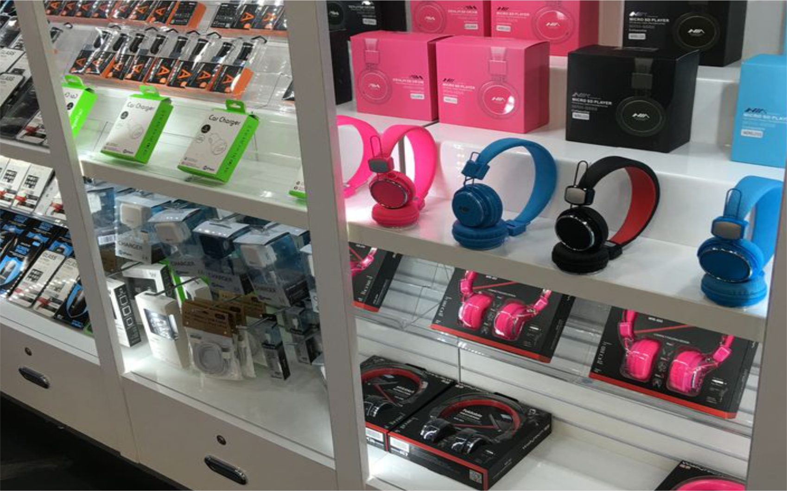

Reasons why every business needs a website in 2024
Admin | 20 july 2024 | BusinessShare this post
in this current era with prevalent digital trends, its unarguably a fact that Websites has become a functional tool for increased business productivity, various reasons exists, giving credence to the essence of a brand website especially in 2024. some of these reasons are discused below.
1. online presence and Visibility:
websites allows businesses to be visible online, making it easy to reach potential customers who are searching for products or services. It increases the customer base of a business beyond local population by creating an online presence with a global reach.

Photo credit | pinterest.com
2. Serves as a visual store/Office:
Just like a physical store, a website is your visual store located on the internet, available 24/7 and easily accesible to visitors from various locations across the globe, providing customers with the convenience of accessing information, browsing products, and making purchases at any time, which can lead to increased sales, customer satisfaction, increased output and productivity.
Photo credit | pinterest.com
3. Authentication of a business's professionalism:
In today’s digital age, customers expect businesses to have an online presence, this helps to authenticate the business's Level of professionalism as customers tends to see such business as updated and trustworthy, a website will not only authenticate a business professionalism but it also help to increase brand loyalty and boost customers confidence in a business.
Photo credit | pinterest.com
4. Marketing facilitation:
With the birth of e-commerce websites, seamless transactions are conducted on your website while you go about other things.website serves as an effective marketing tool, enabling businesses to complete sales, delivery and order online with relative ease.
With the integration of digital marketing mechanisms such as SEO, content marketing, and social media integration. Sales are facilitated online, as well as bookings, lead generation and others hence contributing to revenue growth and productivity.
Photo credit | pinterest.com
5. Easy Feedback and customer support:
Websites provides an enabling opportunity for a business to easily receive feedback from it's customers, with the aid of tools like live chat and contact forms, businesses receive feedbacks from customers on the effectiveness of their products and services, thereby helping the business build viable customer relationship and render support appropriately.
Photo credit | pinterest.com
6. Reduced cost of service delivery:
Prior to the invention of websites, companies spend huge amounts yearly to public relations firms and hiring of personnel who serve as representatives, but these days websites now serve as a middle man between a business and it's audience, by displaying contents to customers and potential clients, your websites introduces your services to your potential clients and customers while you do other things. This undoubtedly has reduced cost of service delivery to it's barest minimum.
Irrespective of the nature and location of your business, every business or company that wishes to retain it's relevance and authenticity in this digital age, should have a functional website. please comment and share if you found this post insightful
Share this post
Read alsoThe Importance of Networking in Business DevelopmentRecent Post
Read More posts

Why Nigerians are poor
20 june 2024
Why Nigerians are poor
22 june 2024
Why Nigerians are poor
22 june 2024
Why Nigerians are poor
22 june 2024
Why Nigerians are poor
22 june 2024
Why Nigerians are poor
22 june 2024
Why Nigerians are poor
22 june 2024